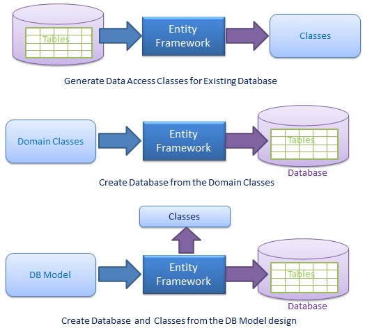
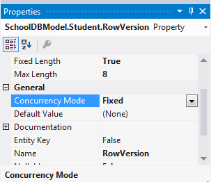

EF是微软主推的数据存取技术,在实际开发中，现在通常使用EF来构建应用程序的数据存取层,它是一个开源的“对象/关系映射（ORM：Object Relational Mapping）”框架，使应用程序可以使用一种“纯”的对象模型来访问关系数据库中的数据。
微软官方提供的ORM工具，ORM让开发人员节省数据库访问的代码时间，将更多的时间放到业务逻辑层代码上。
EF提供变更跟踪、唯一性约束、惰性加载、查询事物等。开发人员使用Linq语言，对数据库操作如同操作Object对象一样省事。
EF有三种使用场景，1. 从数据库生成Class2.由实体类生成数据库表结构3. 通过数据库可视化设计器设计数据库，同时生成实体类
ORM 是将数据存储从域对象自动映射到关系型数据库的工具。ORM主要包括3个部分：域对象、关系数据库对象、映射关系。ORM使类提供自动化CRUD，使开发人员从数据库API和SQL中解放出来。
EDM（实体数据模型）:EDM包括三个模型，概念模型、 映射和存储模型。
概念模型︰概念模型包含模型类和它们之间的关系。独立于数据库表的设计。主要体现为一组可以被应用程序直接使用的类，ADO.NET实体框架使用一种名为“CSDL (Conceptual Schema Definition Language)”的语言来描述这一结构
存储模型︰存储模型是数据库设计模型，包括表、 视图、 存储的过程和他们的关系和键。主要体现为一组与底层数据存储介质（比如数据库系统）直接对应的类。类似地，ADO.NET实体框架使用一种名为“SSDL (Storage Schema Definition Language)”的语言来描述这一结构。
映射︰映射包含有关如何将概念模型映射到存储模型的信息。解决“概念模型”中的类如何与“存储模型”中的类相互对应的问题，我们使用“MSL (Mapping Specification Language)”来描述这一映射关系。
LINQ to Entities：LINQ to Entities 是一种用于编写针对对象模型的查询的查询语言。它返回在概念模型中定义的实体。
Entity SQL:Entity SQL 是另一种炉类似于L2E的言语，但相给L2E要复杂的多，所以开发人员不得不单独学习它。
Object Services(对象服务)：是数据库的访问入口，负责数据具体化，从客户端实体数据到数据库记录以及从数据库记录和实体数据的转换。
Entity Client Data Provider：主要职责是将L2E或Entity Sql转换成数据库可以识别的Sql查询语句，它使用Ado.net通信向数据库发送数据可获取数据。
ADO.Net Data Provider：使用标准的Ado.net与数据库通信
EF在底层使用ADO.NET data provider，因此，它可以看成是对现有ADO.NET技术的一个“增强版”
ADO.NET对数据库存取引擎的封装较少，因此，开发效率不如EF，但性能有保证。
EF提供了更高层的抽象，开发简单，使用灵活，但性能比直接使用ADO.NET会有损失（因为它多了一个将LINQ查询转换为SQL命令的步骤）。
开源，且有足够的资源投入，持续完善。
可以访问多种数据库（如Oracle、 IBM databases, SQL Anywhere、MySQL、SQLite、 VistaDB 等），但与SQL Server配合得最好。
更好地将应用程序与数据库结构隔离开了。
足够灵活：支持三种开发模式
EF5由两部分组成，EF api和.net framework 4.0/4.5，而EF6是独立的EntityFramework.dll，不依赖.net Framework。使用NuGet即可安装EF。
添加完成之后，.config文件中会添加配置
每个Entity Data Model 生成一个context类，类数据库每个表生成一个entity类。如在School.edmx中包含的两个重要的文件{EDM Name}.context.tt和{EDM Name}.tt
Student.Context.tt：T4模板用于生成的context类，可以从目录结构中看到Student.Context.tt下包含一个Student.Context.cs文件。
Student.tt：用于生成表映射的实体类。Entity类是POCO类。如Student生成
视图（View）将被看成是一种虚拟表，因此，导入之后，将成独立的实体类
存储过程与函数将成为DbContext对象的公有方法
EDM生成DrivingExamEntities类，该类从System.Data.Entity.DbContext类继承。EntityFramework4.1中Context类从ObjectContext类继承。DbContext类与ObjectContext类似，它对ObjcetContext类进行包装更利于开发的三种模式：CodeFirst、Model First、Database First.
DbContext是EntityFramework很重要的部分，连接域模型与数据库的桥梁，是与数据库通信的主要类。
DbContext主要负责以下活动：
EntitySet：DbContext包含了所有映射到表的entities
Querying：将Linq-To-Entities转译为Sql并发送到数据库
Change Tracking：从数据库获取entities后保留并跟踪实体数据变化
Persisting Data：根据entity状态执行Insert、update、delete命令
Caching：DbContext的默认第一级缓存，在上下文中的生命周期中存储entity
Manage Relationship：DbContext在DbFirst模式中使用CSDL、MSL、SSDL管理对象关系，Code first中使用fluent api 管理关系
Object Materialization：DbContext将物理表转成entity实例对象
// DbContext实例化：
using (var ctx = new DrivingExamEntities())
{
//在里面做CRUD操作
}
//将DbContext转为ObjectContext
using (var ctx = new DrivingExamEntities())
{
var objectContext = (ctx as System.Data.Entity.Infrastructure.IObjectContextAdapter).ObjectContext;
//use objectContext here..
}
不依赖于任何Framework的类的类（also known as persistence-ignorant objects），为Entity Data Model生成CRUD命令服务。
Dynamic Proxy是运行时POCO类的代理类，类似POCO类的包装。Dynamic Proxy允许延迟加载（Lazy loading），自动跟踪更改。POCO Entity必需满足以下几点才能转为POCO Proxy：
1. 必需声明为public 类
2. 不可以是sealed类
3. 不可以是抽象类
4. 导航属性必需是public,vitual(Entity包含两种属性，标量属性Scalar properties：Entity本身的字段值，Navigation properties：其它entity的引用如班级-学生)
5.集合属性必需是 ICollection
6.ProxyCreationEnabled 选项必需是true
public class Student
{
public Student()
{
this.Courses = new HashSet<Course>();
}
public int StudentID { get; set; }
public string StudentName { get; set; }
public Nullable<int> StandardId { get; set; }
public virtual Standard Standard { get; set; }
public virtual StudentAddress StudentAddress { get; set; }
public virtual ICollection<Course> Courses { get; set; }
}
在我们做CRUD操作时，要先了解EntityFramework如何管理实体状态。每个实体的生命周期内都会在DbContext上下文中保存一个状态,分别是
Added、Deleted、Modified、Unchanged、Detached
三种查询:方式1: LINQ to Entities,方式2: Entity SQL,方式3: Native SQL
LINQ to Entities可以看成是LINQ to Object的一个“变种”，通过LINQ来查询ADO.NET实体数据模型。它在底层使用“对象服务（Object services）”来完成其功能。对象服务是一组用于查询实体数据模型的类，它可以将这些查询结果转换为强类型的CLR对象
using (var context = newSchoolDBEntities())
{
var L2EQuery = context.Students.where(s => s.StudentName == "Bill");
var student = L2EQuery.FirstOrDefault<Student>();
}
//或者
using (var context = newSchoolDBEntities())
{
var L2EQuery = from st in context.Students where st.StudentName == "Bill"select st;
var student = L2EQuery.FirstOrDefault<Student>();
var contacts = from c in context.Contacts where c.FirstName=="Robert" select new { c.Title, c.FirstName, c.LastName };
//或者
var contacts = from c in context.Contacts where c.FirstName == "Robert" let ContactName = new {c.Title, c.LastName, c.FirstName} select ContactName;
}
Entity SQL是一种非常类似于标准SQL的查询语言，其不同之处在它查询的对象是EDM而不是关系数据库中的表。
string sqlString = "SELECT VALUE st FROM SchoolDBEntities.Students " + "AS st WHERE st.StudentName == 'Bill'";
var objctx = (ctx as IObjectContextAdapter).ObjectContext;
ObjectQuery<Student> student = objctx.CreateQuery<Student>(sqlString);
//使用EntityDataReader
using (var con = newEntityConnection("name=SchoolDBEntities"))
{
con.Open();
EntityCommand cmd = con.CreateCommand();
cmd.CommandText = "SELECT VALUE st FROM SchoolDBEntities.Students as st where st.StudentName='Bill'";
Dictionary<int, string> dict = newDictionary<int, string>();
using (EntityDataReader rdr = cmd.ExecuteReader(CommandBehavior.SequentialAccess | CommandBehavior.CloseConnection))
{
while (rdr.Read())
{
int a = rdr.GetInt32(0);
var b = rdr.GetString(1);
dict.Add(a, b);
}
}
}
不管是使用Entity SQL还是LINQ to Entities，最终都要依赖“Entity Client”来完成其工作的。我们可以在应用程序中直接使用Entity Client，但在这一层次你只能通过编写Entity SQL查询来存取数据，虽然在性能方面有一定的改善，但你不得不手动跟踪数据的修改状况，这是一件麻烦事。因此，只有在需要有较高的性能，并且以只读方式访问数据时，我们才使用Entity Client直接执行Entity SQL。
用得最多的两种方式是LINQ to Entities或”扩展方法+Lambda表达式
一些很简单的不返回数据集合的SQL命令（比如delete），可以直接发给数据库。
Object Service/Entity SQL或EntityClient在实际开发中几乎没有人用。
using (var context = newSchoolDBEntities())
{
var studentName = ctx.Students.SqlQuery("Select studentid, studentname, standardId from Student where studentname='Bill'").FirstOrDefault<Student>();
}
在实际开发中，也经常使用扩展方法+ lambda表达式以“级联”的方式完成查询工作
事实上，LINQ to Entities查询最终也是被转化为扩展方法+ lambdas再执行的。
var contacts = context.Contacts
.Where(c => c.FirstName=="Robert") .OrderBy((foo) => foo.LastName);
LINQ to Entities和Entity SQL会被转换为一个命令树（command tree），之后，在EDM和数据库提供者（database provider）的帮助下，生成另外一个适用于此数据库的命令树。最后，再由ADO.NET provider（比如SqlClient）依据此命令树，生成真实发给数据库执行的SQL命令。
连机状态下持久化，在同一个DbContext中不需要销毁Entity，直接写入数据库
脱机状态持久化指读取和保存Entity在两个不同的DbContext中，Context2不知道Entity的更新状态，所以必需通知Context2当前的Entity做了何种更新。
// 正确的添加和删除
using (var context = new SchoolDBEntities())
{
var studentList = context.Students.ToList<Student>();
//添加操作
context.Students.Add(newStudent() { StudentName = "New Student" });
//更新操作
studentToUpdate = studentList.Where(s => s.StudentName == "student1").FirstOrDefault<Student>();
studentToUpdate.StudentName = "Edited student1";
//删除操作
context.Students.Remove(studentList.ElementAt<Student>(0));
//在数据库执行添加、更新、或者删除操作
context.SaveChanges();
}
// 以下代码在List中添加和删除不起作用，只有更生有效
using (var context = new SchoolDBEntities())
{
var studentList = context.Students.ToList<Student>();
//添加操作
studentList.Add(newStudent() { StudentName = "New Student" });
//更新操作
studentToUpdate = studentList.Where(s => s.StudentName == "student1").FirstOrDefault<Student>();
studentToUpdate.StudentName = "Edited student1";
//删除操作
if (studentList.Count > 0)
studentList.Remove(studentList.ElementAt<Student>(0));
//在数据库执行添加、更新、或者删除操作
context.SaveChanges();
}
Student disconnectedStudent = newStudent() { StudentName = "New Student" };
disconnectedStudent.StudentAddress = newStudentAddress() { Address1 = "Address", City = "City1" };
using (var ctx = newSchoolDBEntities())
{
//把脱机状态下的实体附加到context实例 - ctx
ctx.Students.Attach(disconnectedStudent);
// get DbEntityEntry instance to check the EntityState of specified entity
var studentEntry = ctx.Entry(disconnectedStudent);
var addressEntry = ctx.Entry(disconnectedStudent.StudentAddress);
Console.WriteLine("Student EntityState: {0}",studentEntry.State);
Console.WriteLine("StudentAddress EntityState: {0}",addressEntry.State);
//添加多个关系实体时与添加单个实体一样，更新关系实体时需要跟踪每个实体的状态。
}
什么是并发？并发分悲观并发和乐观并发
悲观并发：比如有两个用户A,B，同时登录系统修改一个文档，如果A先进入修改，则系统会把该文档锁住，B就没办法打开了，只有等A修改完，完全退出的时候B才能进入修改。
乐观并发：同上面的例子，A,B两个用户同时登录，如果A先进入修改紧跟着B也进入了。A修改文档的同时B也在修改。如果在A保存之后B再保存他的修改，此时系统检测到数据库中文档记录与B刚进入时不一致，B保存时会抛出异常，修改失败。
Entity Framework不支持悲观并发，只支持乐观并发。
如果要对某一个表做并发处理，就在该表中加一条Timestamp类型的字段。注意，一张表中只能有一个Timestamp的字段。

public class Person
{
public int PersonId { get; set; }
public int SocialSecurityNumber { get; set; }
public string FirstName { get; set; }
public string LastName { get; set; }
[Timestamp]
public byte[] RowVersion { get; set; }
}
Fluent API用IsRowVersion方法
modelBuilder.Entity<Person>().Property(p => p.RowVersion).IsRowVersion();
我们看到生成的数据库中，RowVersion是timestamp类型。
写一段代码来测试一下：
static void Main(string[] args)
{
var person = new Person
{
FirstName = "Rowan",
LastName = "Miller",
SocialSecurityNumber = 12345678
};
//新增一条记录，保存到数据库中
using (var con = new BreakAwayContext())
{
con.People.Add(person);
con.SaveChanges();
}
var firContext = new BreakAwayContext();
//取第一条记录,并修改一个字段：这里是修改了FirstName
//先不保存
var p1 = firContext.People.FirstOrDefault();
p1.FirstName = "Steven";
//再创建一个Context，同样取第一条记录，修改LastName字段并保存
using (var secContext = new BreakAwayContext())
{
var p2 = secContext.People.FirstOrDefault();
p2.LastName = "Francis";
secContext.SaveChanges();
}
try
{
firContext.SaveChanges();
Console.WriteLine(" 保存成功");
}
catch (DbUpdateConcurrencyException ex)
{
Console.WriteLine(ex.Entries.First().Entity.GetType().Name + " 保存失败");
}
Console.Read();
}
上面我们实例化了三个DbContext,第一个增加一条记录到数据库中，第二个修改刚增加的记录但不保存，然后第三个Context也取刚新增的记录并保存，最后再保存第二个Context，结果保存失败。可以看到我们的并发控制取到了作用。
如果我们只是要对某个字段作并发控制呢？别着急，EF也有办法。Data Annotations中用ConcurrencyCheck来标识
public class Person
{
public int PersonId { get; set; }
[ConcurrencyCheck]
public int SocialSecurityNumber { get; set; }
public string FirstName { get; set; }
public string LastName { get; set; }
public byte[] RowVersion { get; set; }
}
Fluent API用IsConcurrencyToken方法
modelBuilder.Entity<Person>().Property(p => p.SocialSecurityNumber).IsConcurrencyToken();
上面的实体中，我们将SocialSecurityNumber(社会保险号)标识为开放式并发，也写一个类似的代码测试一下：
static void Main(string[] args)
{
var person = new Person
{
FirstName = "Rowan",
LastName = "Miller",
SocialSecurityNumber = 12345678
};
//新增一条记录，保存到数据库中
using (var con = new BreakAwayContext())
{
con.People.Add(person);
con.SaveChanges();
}
var firContext = new BreakAwayContext();
//取第一条记录,并修改SocialSecurityNumber字段
//先不保存
var p1 = firContext.People.FirstOrDefault();
p1.SocialSecurityNumber = 123;
//再创建一个Context，同样取第一条记录，
//修改SocialSecurityNumber字段并保存
using (var secContext = new BreakAwayContext())
{
var p2 = secContext.People.FirstOrDefault();
p2.SocialSecurityNumber = 456;
secContext.SaveChanges();
}
try
{
firContext.SaveChanges();
Console.WriteLine(" 保存成功");
}
catch (DbUpdateConcurrencyException ex)
{
Console.WriteLine(ex.Entries.First().Entity.GetType().Name + " 保存失败");
}
Console.Read();
}
运行结果同样是保存失败，说明我们的并发控制起作用了。
贪婪加载：使用Include()，自动加载关联实体
using (var context = new SchoolDBEntities())
{
var res = (from s in context.Students.Include("Standard")
where s.StudentName == "Student1"
select s).FirstOrDefault<Student>();
}
//执行Sql
SELECTTOP (1)
[Extent1].[StudentID] AS [StudentID],
[Extent1].[StudentName] AS [StudentName],
[Extent2].[StandardId] AS [StandardId],
[Extent2].[StandardName] AS [StandardName],
[Extent2].[Description] AS [Description]
FROM [dbo].[Student] AS [Extent1]
LEFTOUTERJOIN [dbo].[Standard] AS [Extent2] ON [Extent1].[StandardId] = [Extent2].[StandardId]
WHERE'Student1' = [Extent1].[StudentName]
惰性加载：延迟加载对象关联的实体，用到时再加载，EF默认为LazyLoading
using (var ctx = newSchoolDBEntities())
{
//Loading students only
IList<Student> studList = ctx.Students.ToList<Student>();
Student std = studList[0];
//Loads Student address for particular
Student only (seperate SQL query)
StudentAddress add = std.StudentAddress;
}
返回实体
using (var ctx = newSchoolDBEntities())
{
//列名必需要Entity属性匹配
var studentList = ctx.Students.SqlQuery("Select * from Student").ToList<Student>();
}
返回非实体类型
using (var ctx = newSchoolDBEntities())
{
//Get student name of string typestring studentName = ctx.Database.SqlQuery<string>("Select studentname
from Student where studentid=1").FirstOrDefault<string>();
}
using (var ctx = new SchoolDBEntities())
{
//Update command
int noOfRowUpdated = ctx.Database.ExecuteSqlCommand("Update student set studentname ='changed student by command' where studentid=1");
//Insert command
int noOfRowInserted = ctx.Database.ExecuteSqlCommand("insert into student(studentname) values('New Student')");
//Delete command
int noOfRowDeleted = ctx.Database.ExecuteSqlCommand("delete from student where studentid=1");
}